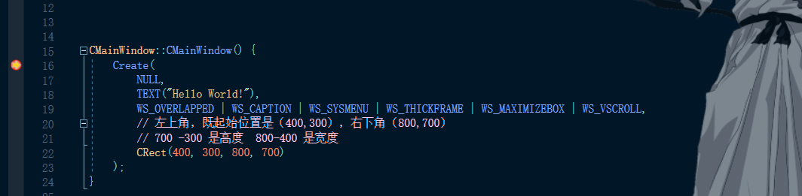
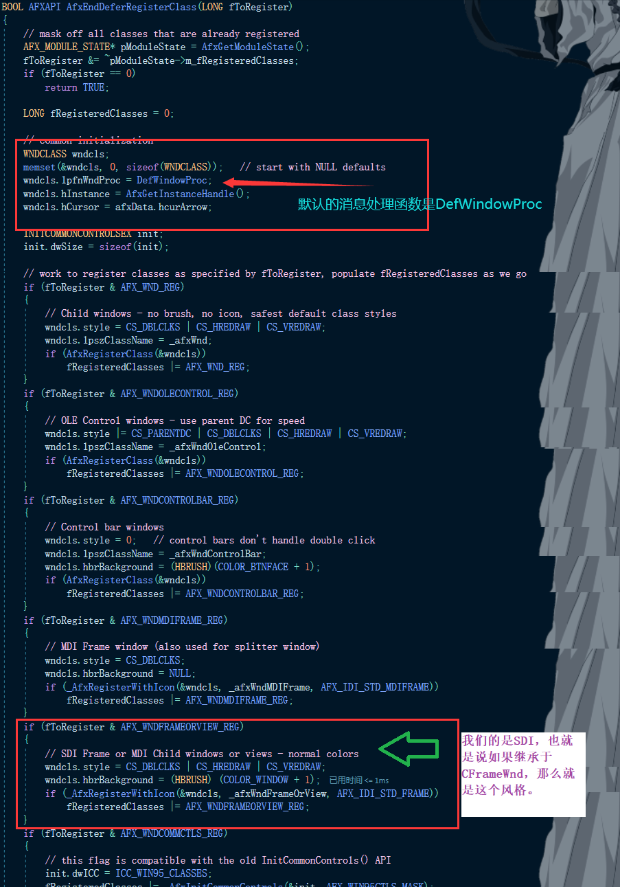
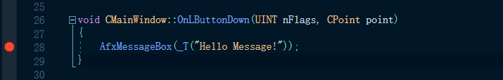
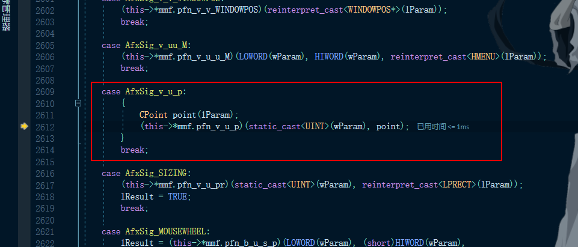
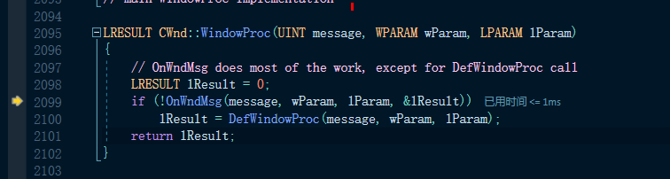
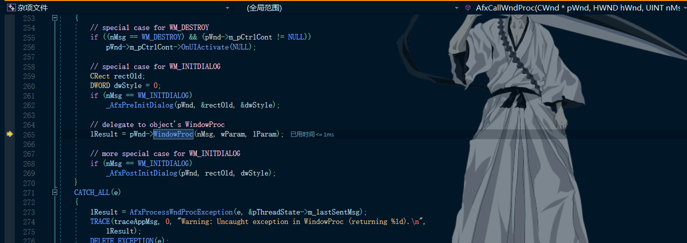
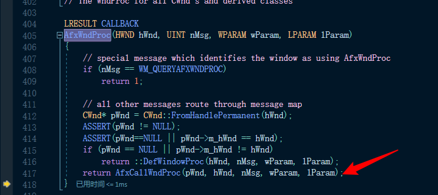
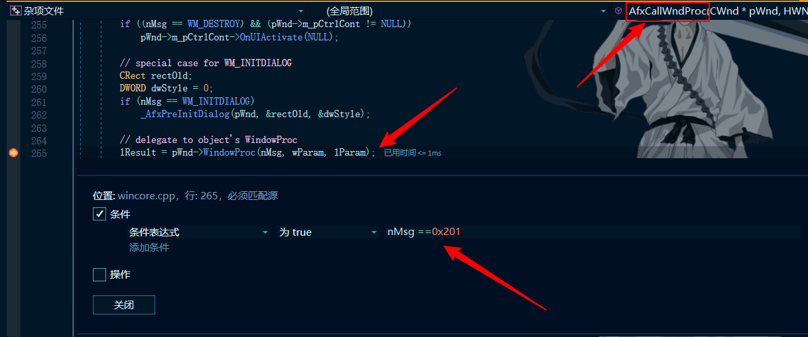

# 什么是命令传递
消息会按照规定的路线，游走于各个对象之间，直到找到它的消息处理函数；如果找不到，则最终把它交给 ::DefWindowPro 函数去处理。
# 本节需要掌握的知识点
1、本节必须掌握的知识点
通过单步调试，熟悉窗口过程处理函数在 MFC 的实现和命令传递的方式
2、需要简单了解的内容
MessageMapFunctions
# 找到 MFC 的窗口的消息处理函数
# Create 函数
通过 Create 函数来看窗口创建流程
之前我们了解过 Create 函数，其第一个参数（类名）为 NULL，则以 MFC 内建的窗口类产生一个标准的外框窗口，既然它有窗口类那肯定就有窗口过程处理函数，我们需要从这个函数入手下断点去跟进。
CMainWindow::CMainWindow() { | |
Create( | |
NULL, | |
TEXT("Hello World!"), | |
WS_OVERLAPPED | WS_CAPTION | WS_SYSMENU | WS_THICKFRAME | WS_MAXIMIZEBOX | WS_VSCROLL, | |
// 左上角，既起始位置是（400,300），右下角（800,700） | |
// 700 -300 是高度 800-400 是宽度 | |
CRect(400, 300, 800, 700) | |
); | |
} |

单步跟进后，进入 CFrameWnd::Create ， Create 函数是一个虚函数。
BOOL CFrameWnd::Create(LPCTSTR lpszClassName, | |
LPCTSTR lpszWindowName, | |
DWORD dwStyle, | |
const RECT& rect, | |
CWnd* pParentWnd, | |
LPCTSTR lpszMenuName, | |
DWORD dwExStyle, | |
CCreateContext* pContext) | |
{ | |
HMENU hMenu = NULL; | |
if (lpszMenuName != NULL) | |
{ | |
// load in a menu that will get destroyed when window gets destroyed | |
HINSTANCE hInst = AfxFindResourceHandle(lpszMenuName, ATL_RT_MENU); | |
if ((hMenu = ::LoadMenu(hInst, lpszMenuName)) == NULL) | |
{ | |
TRACE(traceAppMsg, 0, "Warning: failed to load menu for CFrameWnd.\n"); | |
PostNcDestroy(); // perhaps delete the C++ object | |
return FALSE; | |
} | |
} | |
m_strTitle = lpszWindowName; // save title for later | |
if (!CreateEx(dwExStyle, lpszClassName, lpszWindowName, dwStyle, | |
rect.left, rect.top, rect.right - rect.left, rect.bottom - rect.top, | |
pParentWnd->GetSafeHwnd(), hMenu, (LPVOID)pContext)) | |
{ | |
TRACE(traceAppMsg, 0, "Warning: failed to create CFrameWnd.\n"); | |
if (hMenu != NULL) | |
DestroyMenu(hMenu); | |
return FALSE; | |
} | |
return TRUE; | |
} |
# CreateEx 函数
而后会进入 CreateEx 函数中：
BOOL CWnd::CreateEx(DWORD dwExStyle, LPCTSTR lpszClassName, | |
LPCTSTR lpszWindowName, DWORD dwStyle, | |
int x, int y, int nWidth, int nHeight, | |
HWND hWndParent, HMENU nIDorHMenu, LPVOID lpParam) | |
{ | |
ASSERT(lpszClassName == NULL || AfxIsValidString(lpszClassName) || | |
AfxIsValidAtom(lpszClassName)); | |
ENSURE_ARG(lpszWindowName == NULL || AfxIsValidString(lpszWindowName)); | |
// allow modification of several common create parameters | |
CREATESTRUCT cs; | |
cs.dwExStyle = dwExStyle; | |
cs.lpszClass = lpszClassName; | |
cs.lpszName = lpszWindowName; | |
cs.style = dwStyle; | |
cs.x = x; | |
cs.y = y; | |
cs.cx = nWidth; | |
cs.cy = nHeight; | |
cs.hwndParent = hWndParent; | |
cs.hMenu = nIDorHMenu; | |
cs.hInstance = AfxGetInstanceHandle(); | |
cs.lpCreateParams = lpParam; | |
if (!PreCreateWindow(cs)) | |
{ | |
PostNcDestroy(); | |
return FALSE; | |
} | |
AfxHookWindowCreate(this); | |
HWND hWnd = CreateWindowEx(cs.dwExStyle, cs.lpszClass, | |
cs.lpszName, cs.style, cs.x, cs.y, cs.cx, cs.cy, | |
cs.hwndParent, cs.hMenu, cs.hInstance, cs.lpCreateParams); | |
#ifdef _DEBUG | |
if (hWnd == NULL) | |
{ | |
TRACE(traceAppMsg, 0, "Warning: Window creation failed: GetLastError returns 0x%8.8X\n", | |
GetLastError()); | |
} | |
#endif | |
if (!AfxUnhookWindowCreate()) | |
PostNcDestroy(); // cleanup if CreateWindowEx fails too soon | |
if (hWnd == NULL) | |
return FALSE; | |
ASSERT(hWnd == m_hWnd); // should have been set in send msg hook | |
return TRUE; | |
} |
跟进 CreateEx 函数，其一开始对一些信息进行了填充，这个信息传递给了 PreCreateWindow 函数。
CREATESTRUCT 结构体的介绍如下，此结构也是分为 A 和 W 版本。
struct tagCREATESTRUCTA { | |
LPVOID lpCreateParams; // 创建参数 | |
HINSTANCE hInstance; // 窗口模块的句柄 | |
HMENU hMenu; // 窗口使用的菜单句柄 | |
HWND hwndParent; // 如果该窗口是一个子窗口，则为父窗口的句柄；如果该窗口是自有的，这个成员标识了所有者窗口；如果该窗口不是一个子窗口或自有窗口，这个成员是 NULL。 | |
int cy; // 窗口的高度，单位是像素。 | |
int cx; // 窗口的宽度，单位是像素。 | |
int y; //y 坐标，如果窗口是一个子窗口，坐标是相对于父窗口的，否则，坐标是相对于屏幕原点的。 | |
int x; //x 坐标 | |
LONG style; // 窗口的样式 | |
LPCSTR lpszName; // 窗口的名称 | |
LPCSTR lpszClass; // 窗口的类名 | |
DWORD dwExStyle; // 扩展窗口样式 | |
} CREATESTRUCTA, *LPCREATESTRUCTA; |
# PreCreateWindow 函数
跟进 PreCreateWindow 函数:
BOOL CFrameWnd::PreCreateWindow(CREATESTRUCT& cs) | |
{ | |
if (cs.lpszClass == NULL) | |
{ | |
VERIFY(AfxDeferRegisterClass(AFX_WNDFRAMEORVIEW_REG)); | |
//_afxWndFrameOrView 在 AfxDeferRegisterClass 函数中被处理了。 | |
cs.lpszClass = _afxWndFrameOrView; // COLOR_WINDOW background | |
} | |
// 窗口风格的扩展 | |
if (cs.style & FWS_ADDTOTITLE) | |
cs.style |= FWS_PREFIXTITLE; | |
cs.dwExStyle |= WS_EX_CLIENTEDGE; | |
return TRUE; | |
} |
我们可以看见如果窗口名称为空则帮我去注册一个默认的窗口类。
# AfxEndDeferRegisterClass 函数
其使用的是 AfxDeferRegisterClass ，这是一个宏，其背后就是 AfxEndDeferRegisterClass 这个函数，跟进后就可以看到：

这里知道了消息处理函数是 DefWindowProc
# AfxHookWindowCreate 函数
但通过阅读代码我们发现这个函数不是我们想要知道其是如何处理消息的函数，继续跟进，跟到 CreateEx 函数里面会有一个 AfxHookWindowCreate 函数，通过这个名字我们就知道什么意思了，其就表示在窗口创建之前挂了一个钩子（HOOK），跟进这个函数：
void AFXAPI AfxHookWindowCreate(CWnd* pWnd) | |
{ | |
_AFX_THREAD_STATE* pThreadState = _afxThreadState.GetData(); | |
if (pThreadState->m_pWndInit == pWnd) | |
return; | |
if (pThreadState->m_hHookOldCbtFilter == NULL) | |
{ | |
pThreadState->m_hHookOldCbtFilter = ::SetWindowsHookEx(WH_CBT, | |
_AfxCbtFilterHook, NULL, ::GetCurrentThreadId()); | |
if (pThreadState->m_hHookOldCbtFilter == NULL) | |
AfxThrowMemoryException(); | |
} | |
ASSERT(pThreadState->m_hHookOldCbtFilter != NULL); | |
ASSERT(pWnd != NULL); | |
ASSERT(pWnd->m_hWnd == NULL); // only do once | |
ASSERT(pThreadState->m_pWndInit == NULL); // hook not already in progress | |
pThreadState->m_pWndInit = pWnd; | |
} |
可以看到其挂钩子的函数是 SetWindowsHookEx （其第一个参数是 WH_CBT ，这是一个宏，其就是一个钩子，其表示可以监听窗口激活、产生、释放（关闭）、最小化、最大化或改变；那么在这些事件之前就会调用函数 _AfxCbtFilterHook ，也就是第二个参数），相当于安装了一个 WH_CBT 类型的钩子函数 _AfxCbtFilterHook 。
# _AfxCbtFilterHook 函数
我们查看 _AfxCbtFilterHook 函数:
LRESULT CALLBACK | |
_AfxCbtFilterHook(int code, WPARAM wParam, LPARAM lParam) | |
{ | |
_AFX_THREAD_STATE* pThreadState = _afxThreadState.GetData(); | |
if (code != HCBT_CREATEWND) | |
{ | |
// wait for HCBT_CREATEWND just pass others on... | |
return CallNextHookEx(pThreadState->m_hHookOldCbtFilter, code, | |
wParam, lParam); | |
} | |
ASSERT(lParam != NULL); | |
LPCREATESTRUCT lpcs = ((LPCBT_CREATEWND)lParam)->lpcs; | |
ASSERT(lpcs != NULL); | |
CWnd* pWndInit = pThreadState->m_pWndInit; | |
BOOL bContextIsDLL = afxContextIsDLL; | |
if (pWndInit != NULL || (!(lpcs->style & WS_CHILD) && !bContextIsDLL)) | |
{ | |
// Note: special check to avoid subclassing the IME window | |
if (_afxDBCS) | |
{ | |
// check for cheap CS_IME style first... | |
if (GetClassLong((HWND)wParam, GCL_STYLE) & CS_IME) | |
goto lCallNextHook; | |
// get class name of the window that is being created | |
LPCTSTR pszClassName; | |
TCHAR szClassName[_countof("ime")+1]; | |
if (DWORD_PTR(lpcs->lpszClass) > 0xffff) | |
{ | |
pszClassName = lpcs->lpszClass; | |
} | |
else | |
{ | |
szClassName[0] = '\0'; | |
#pragma warning(push) | |
#pragma warning(disable: 4302) // 'type cast' : truncation from 'LPCSTR' to 'ATOM' | |
GlobalGetAtomName((ATOM)lpcs->lpszClass, szClassName, _countof(szClassName)); | |
#pragma warning(pop) | |
pszClassName = szClassName; | |
} | |
// a little more expensive to test this way, but necessary... | |
if (::AfxInvariantStrICmp(pszClassName, _T("ime")) == 0) | |
goto lCallNextHook; | |
} | |
ASSERT(wParam != NULL); // should be non-NULL HWND | |
HWND hWnd = (HWND)wParam; | |
WNDPROC oldWndProc; | |
if (pWndInit != NULL) | |
{ | |
AFX_MANAGE_STATE(pWndInit->m_pModuleState); | |
// the window should not be in the permanent map at this time | |
ASSERT(CWnd::FromHandlePermanent(hWnd) == NULL); | |
// connect the HWND to pWndInit... | |
pWndInit->Attach(hWnd); | |
// allow other subclassing to occur first | |
pWndInit->PreSubclassWindow(); | |
WNDPROC *pOldWndProc = pWndInit->GetSuperWndProcAddr(); | |
ASSERT(pOldWndProc != NULL); | |
// subclass the window with standard AfxWndProc | |
WNDPROC afxWndProc = AfxGetAfxWndProc(); | |
oldWndProc = (WNDPROC)SetWindowLongPtr(hWnd, GWLP_WNDPROC, | |
(DWORD_PTR)afxWndProc); | |
ASSERT(oldWndProc != NULL); | |
if (oldWndProc != afxWndProc) | |
*pOldWndProc = oldWndProc; | |
pThreadState->m_pWndInit = NULL; | |
} | |
else | |
{ | |
ASSERT(!bContextIsDLL); // should never get here | |
static ATOM s_atomMenu = 0; | |
bool bSubclass = true; | |
if (s_atomMenu == 0) | |
{ | |
WNDCLASSEX wc; | |
memset(&wc, 0, sizeof(WNDCLASSEX)); | |
wc.cbSize = sizeof(WNDCLASSEX); | |
s_atomMenu = (ATOM)GetClassInfoEx(NULL, _T("#32768"), &wc); | |
} | |
// Do not subclass menus. | |
if (s_atomMenu != 0) | |
{ | |
ATOM atomWnd = (ATOM)::GetClassLongPtr(hWnd, GCW_ATOM); | |
if (atomWnd == s_atomMenu) | |
bSubclass = false; | |
} | |
else | |
{ | |
TCHAR szClassName[256]; | |
if (::GetClassName(hWnd, szClassName, 256)) | |
{ | |
szClassName[255] = NULL; | |
if (_tcscmp(szClassName, _T("#32768")) == 0) | |
bSubclass = false; | |
} | |
} | |
if (bSubclass) | |
{ | |
// subclass the window with the proc which does gray backgrounds | |
oldWndProc = (WNDPROC)GetWindowLongPtr(hWnd, GWLP_WNDPROC); | |
if (oldWndProc != NULL && GetProp(hWnd, _afxOldWndProc) == NULL) | |
{ | |
SetProp(hWnd, _afxOldWndProc, oldWndProc); | |
if ((WNDPROC)GetProp(hWnd, _afxOldWndProc) == oldWndProc) | |
{ | |
GlobalAddAtom(_afxOldWndProc); | |
SetWindowLongPtr(hWnd, GWLP_WNDPROC, (DWORD_PTR)_AfxActivationWndProc); | |
ASSERT(oldWndProc != NULL); | |
} | |
} | |
} | |
} | |
} | |
lCallNextHook: | |
LRESULT lResult = CallNextHookEx(pThreadState->m_hHookOldCbtFilter, code, | |
wParam, lParam); | |
#ifndef _AFXDLL | |
if (bContextIsDLL) | |
{ | |
::UnhookWindowsHookEx(pThreadState->m_hHookOldCbtFilter); | |
pThreadState->m_hHookOldCbtFilter = NULL; | |
} | |
#endif | |
return lResult; | |
} |
函数中的关键点就是：
// subclass the window with standard AfxWndProc | |
WNDPROC afxWndProc = AfxGetAfxWndProc(); | |
oldWndProc = (WNDPROC)SetWindowLongPtr(hWnd, GWLP_WNDPROC, | |
(DWORD_PTR)afxWndProc); |
把老的消息处理函数替换成了 AfxGetAfxWndProc 函数的返回值。
# AfxGetAfxWndProc 函数
继续跟进 AfxGetAfxWndProc 函数:
// always indirectly accessed via AfxGetAfxWndProc | |
WNDPROC AFXAPI AfxGetAfxWndProc() | |
{ | |
#ifdef _AFXDLL // 如果是动态库的话调用这个 | |
return AfxGetModuleState()->m_pfnAfxWndProc; | |
#else // 静态库调用这个 | |
return &AfxWndProc; | |
#endif | |
} |
发现其会判断是否定义了_AFXDLL 宏，经查阅发现这是判断是否使用了动态链接库，而我们现在使用的是静态链接库，所以返回的就是 AfxWndProc 这个函数的地址。
# AfxWndProc 函数
查看 AfxWndProc 函数:
LRESULT CALLBACK | |
AfxWndProc(HWND hWnd, UINT nMsg, WPARAM wParam, LPARAM lParam) | |
{ | |
// special message which identifies the window as using AfxWndProc | |
if (nMsg == WM_QUERYAFXWNDPROC) | |
return 1; | |
// all other messages route through message map | |
CWnd* pWnd = CWnd::FromHandlePermanent(hWnd); | |
ASSERT(pWnd != NULL); | |
ASSERT(pWnd==NULL || pWnd->m_hWnd == hWnd); | |
if (pWnd == NULL || pWnd->m_hWnd != hWnd) | |
return ::DefWindowProc(hWnd, nMsg, wParam, lParam); | |
return AfxCallWndProc(pWnd, hWnd, nMsg, wParam, lParam); | |
} |
# 总结
这样就是 Crate 的完整创建流程，首先它为我们创建了一个窗口类，填充了默认的窗口处理函数、风格、背景等等，然后通过一个 SetWindowsHookEx ，把我们默认的消息处理函数，替换为了 AfxWndProc 函数
# 标准消息的处理流程
这里以 MFC 的三大类消息中的标准消息为主，去探寻 MFC 的消息处理流程了。
# 验证消息处理函数
在消息处理函数 OnLButtonDown 中下断点：

进入上层调用函数 OnWndMsg 中：

继续执行，直到进入函数 OnWndMsg 的上层调用函数 WindowProc 中：

继续执行，直到进入函数 WindowProc 的上层调用函数 AfxCallWndProc 中：

继续执行，直到进入函数 AfxCallWndProc 的上层调用函数 AfxWndProc 中：

由此可知我们找的消息处理函数是正确的。
# 分析处理流程
在 AfxCallWndProc 中下条件断点：

我们可以看见消息是通过 WindowProc 函数的，这个函数是一个虚函数，也就表示我们可以在类中改写这个函数，但是这里我们没有改写其调用的就是 CWnd::WindowProc 。
virtual LRESULT WindowProc(UINT message, WPARAM wParam, LPARAM lParam); | |
virtual BOOL OnWndMsg(UINT message, WPARAM wParam, LPARAM lParam, LRESULT* pResult); |
在 WindowProc 中调用了 OnWndMsg
LRESULT CWnd::WindowProc(UINT message, WPARAM wParam, LPARAM lParam) | |
{ | |
// OnWndMsg does most of the work, except for DefWindowProc call | |
LRESULT lResult = 0; | |
if (!OnWndMsg(message, wParam, lParam, &lResult)) | |
lResult = DefWindowProc(message, wParam, lParam); | |
return lResult; | |
} |
# OnWndMsg 分析
# 判断消息类型
接下来进入 OnWndMsg 查看，发现这个函数超级长，这里先放一小段：
BOOL CWnd::OnWndMsg(UINT message, WPARAM wParam, LPARAM lParam, LRESULT* pResult) | |
{ | |
LRESULT lResult = 0; | |
union MessageMapFunctions mmf; | |
mmf.pfn = 0; | |
CInternalGlobalLock winMsgLock; | |
// special case for commands | |
if (message == WM_COMMAND) | |
{ | |
if (OnCommand(wParam, lParam)) | |
{ | |
lResult = 1; | |
goto LReturnTrue; | |
} | |
return FALSE; | |
} | |
if (message == WM_CREATE && m_pDynamicLayout != NULL) | |
{ | |
ASSERT_VALID(m_pDynamicLayout); | |
if (!m_pDynamicLayout->Create(this)) | |
{ | |
delete m_pDynamicLayout; | |
m_pDynamicLayout = NULL; | |
} | |
else | |
{ | |
InitDynamicLayout(); | |
} | |
} | |
// special case for notifies | |
if (message == WM_NOTIFY) | |
{ | |
NMHDR* pNMHDR = (NMHDR*)lParam; | |
if (pNMHDR->hwndFrom != NULL && OnNotify(wParam, lParam, &lResult)) | |
goto LReturnTrue; | |
return FALSE; | |
} | |
// special case for activation | |
if (message == WM_ACTIVATE) | |
_AfxHandleActivate(this, wParam, CWnd::FromHandle((HWND)lParam)); | |
// special case for set cursor HTERROR | |
if (message == WM_SETCURSOR && | |
_AfxHandleSetCursor(this, (short)LOWORD(lParam), HIWORD(lParam))) | |
{ | |
lResult = 1; | |
goto LReturnTrue; | |
} | |
// special case for windows that contain windowless ActiveX controls | |
BOOL bHandled; | |
bHandled = FALSE; | |
if ((m_pCtrlCont != NULL) && (m_pCtrlCont->m_nWindowlessControls > 0)) | |
{ | |
if (((message >= WM_MOUSEFIRST) && (message <= AFX_WM_MOUSELAST)) || | |
((message >= WM_KEYFIRST) && (message <= WM_IME_KEYLAST)) || | |
((message >= WM_IME_SETCONTEXT) && (message <= WM_IME_KEYUP))) | |
{ | |
bHandled = m_pCtrlCont->HandleWindowlessMessage(message, wParam, lParam, &lResult); | |
} | |
} | |
if (bHandled) | |
{ | |
goto LReturnTrue; | |
} |
注意联合体 MessageMapFunctions ，这是我在 VS2019 中查看的定义：
union MessageMapFunctions | |
{ | |
AFX_PMSG pfn; // generic member function pointer | |
BOOL (AFX_MSG_CALL CCmdTarget::*pfn_b_D)(CDC*); | |
BOOL (AFX_MSG_CALL CCmdTarget::*pfn_b_b)(BOOL); | |
BOOL (AFX_MSG_CALL CCmdTarget::*pfn_b_u)(UINT); | |
BOOL (AFX_MSG_CALL CCmdTarget::*pfn_b_h)(HANDLE); | |
BOOL (AFX_MSG_CALL CCmdTarget::*pfn_b_W_u_u)(CWnd*, UINT, UINT); | |
BOOL (AFX_MSG_CALL CCmdTarget::*pfn_b_W_COPYDATASTRUCT)(CWnd*, COPYDATASTRUCT*); | |
BOOL (AFX_MSG_CALL CCmdTarget::*pfn_b_HELPINFO)(LPHELPINFO); | |
HBRUSH (AFX_MSG_CALL CCmdTarget::*pfn_B_D_W_u)(CDC*, CWnd*, UINT); | |
HBRUSH (AFX_MSG_CALL CCmdTarget::*pfn_B_D_u)(CDC*, UINT); | |
int (AFX_MSG_CALL CCmdTarget::*pfn_i_u_W_u)(UINT, CWnd*, UINT); | |
int (AFX_MSG_CALL CCmdTarget::*pfn_i_u_u)(UINT, UINT); | |
int (AFX_MSG_CALL CCmdTarget::*pfn_i_W_u_u)(CWnd*, UINT, UINT); | |
int (AFX_MSG_CALL CWnd::*pfn_i_s)(LPTSTR); | |
int (AFX_MSG_CALL CWnd::*pfn_i_S)(LPCTSTR); | |
LRESULT (AFX_MSG_CALL CWnd::*pfn_l_w_l)(WPARAM, LPARAM); | |
LRESULT (AFX_MSG_CALL CWnd::*pfn_l_u_u_M)(UINT, UINT, CMenu*); | |
void (AFX_MSG_CALL CWnd::*pfn_v_b_h)(BOOL, HANDLE); | |
void (AFX_MSG_CALL CWnd::*pfn_v_h)(HANDLE); | |
void (AFX_MSG_CALL CWnd::*pfn_v_h_h)(HANDLE,HANDLE); | |
void (AFX_MSG_CALL CWnd::*pfn_v_v)(); | |
int (AFX_MSG_CALL CWnd::*pfn_i_u)(UINT); | |
HCURSOR (AFX_MSG_CALL CWnd::*pfn_C_v)(); | |
UINT (AFX_MSG_CALL CWnd::*pfn_u_u)(UINT); | |
BOOL (AFX_MSG_CALL CWnd::*pfn_b_v)(); | |
void (AFX_MSG_CALL CWnd::*pfn_v_u)(UINT); | |
void (AFX_MSG_CALL CWnd::*pfn_v_up)(UINT_PTR); | |
void (AFX_MSG_CALL CWnd::*pfn_v_u_u)(UINT, UINT); | |
void (AFX_MSG_CALL CWnd::*pfn_v_i_i)(int, int); | |
void (AFX_MSG_CALL CWnd::*pfn_v_u_u_u)(UINT, UINT, UINT); | |
void (AFX_MSG_CALL CWnd::*pfn_v_u_i_i)(UINT, int, int); | |
void (AFX_MSG_CALL CWnd::*pfn_v_w_l)(WPARAM, LPARAM); | |
void (AFX_MSG_CALL CWnd::*pfn_v_b_W_W)(BOOL, CWnd*, CWnd*); | |
void (AFX_MSG_CALL CWnd::*pfn_v_D)(CDC*); | |
void (AFX_MSG_CALL CWnd::*pfn_v_M)(CMenu*); | |
void (AFX_MSG_CALL CWnd::*pfn_v_M_u_b)(CMenu*, UINT, BOOL); | |
void (AFX_MSG_CALL CWnd::*pfn_v_W)(CWnd*); | |
void (AFX_MSG_CALL CWnd::*pfn_v_W_u_u)(CWnd*, UINT, UINT); | |
void (AFX_MSG_CALL CWnd::*pfn_v_W_p)(CWnd*, CPoint); | |
void (AFX_MSG_CALL CWnd::*pfn_v_W_h)(CWnd*, HANDLE); | |
void (AFX_MSG_CALL CWnd::*pfn_v_u_W)(UINT, CWnd*); | |
void (AFX_MSG_CALL CWnd::*pfn_v_u_W_b)(UINT, CWnd*, BOOL); | |
void (AFX_MSG_CALL CWnd::*pfn_v_u_u_W)(UINT, UINT, CWnd*); | |
void (AFX_MSG_CALL CWnd::*pfn_v_s)(LPTSTR); | |
void (AFX_MSG_CALL CWnd::*pfn_v_u_cs)(UINT, LPCTSTR); | |
void (AFX_MSG_CALL CWnd::*pfn_v_i_s)(int, LPTSTR); | |
int (AFX_MSG_CALL CWnd::*pfn_i_i_s)(int, LPTSTR); | |
UINT (AFX_MSG_CALL CWnd::*pfn_u_p)(CPoint); | |
LRESULT (AFX_MSG_CALL CWnd::*pfn_l_p)(CPoint); | |
UINT (AFX_MSG_CALL CWnd::*pfn_u_v)(); | |
void (AFX_MSG_CALL CWnd::*pfn_v_b_NCCALCSIZEPARAMS)(BOOL, NCCALCSIZE_PARAMS*); | |
void (AFX_MSG_CALL CWnd::*pfn_v_v_WINDOWPOS)(WINDOWPOS*); | |
void (AFX_MSG_CALL CWnd::*pfn_v_u_u_M)(UINT, UINT, HMENU); | |
void (AFX_MSG_CALL CWnd::*pfn_v_u_p)(UINT, CPoint); | |
void (AFX_MSG_CALL CWnd::*pfn_v_u_pr)(UINT, LPRECT); | |
BOOL (AFX_MSG_CALL CWnd::*pfn_b_u_s_p)(UINT, short, CPoint); | |
void (AFX_MSG_CALL CWnd::*pfn_MOUSEHWHEEL)(UINT, short, CPoint); | |
LRESULT (AFX_MSG_CALL CWnd::*pfn_l_v)(); | |
UINT (AFX_MSG_CALL CWnd::*pfn_u_W_u)(CWnd*, UINT); | |
void (AFX_MSG_CALL CWnd::*pfn_v_u_M)(UINT, CMenu*); | |
UINT (AFX_MSG_CALL CWnd::*pfn_u_u_M)(UINT, CMenu*); | |
UINT (AFX_MSG_CALL CWnd::*pfn_u_v_MENUGETOBJECTINFO)(MENUGETOBJECTINFO*); | |
void (AFX_MSG_CALL CWnd::*pfn_v_M_u)(CMenu*, UINT); | |
void (AFX_MSG_CALL CWnd::*pfn_v_u_LPMDINEXTMENU)(UINT, LPMDINEXTMENU); | |
void (AFX_MSG_CALL CWnd::*pfn_APPCOMMAND)(CWnd*, UINT, UINT, UINT); | |
BOOL (AFX_MSG_CALL CWnd::*pfn_RAWINPUT)(UINT, HRAWINPUT); | |
UINT (AFX_MSG_CALL CWnd::*pfn_u_u_u)(UINT, UINT); | |
UINT (AFX_MSG_CALL CWnd::*pfn_u_u_l)(UINT, LPARAM); | |
void (AFX_MSG_CALL CWnd::*pfn_MOUSE_XBUTTON)(UINT, UINT, CPoint); | |
void (AFX_MSG_CALL CWnd::*pfn_MOUSE_NCXBUTTON)(short, UINT, CPoint); | |
void (AFX_MSG_CALL CWnd::*pfn_INPUTLANGCHANGE)(UINT, UINT); | |
BOOL (AFX_MSG_CALL CWnd::*pfn_v_u_h)(UINT, HANDLE); | |
void (AFX_MSG_CALL CWnd::*pfn_INPUTDEVICECHANGE)(unsigned short, HANDLE); | |
LRESULT (AFX_MSG_CALL CWnd::*pfn_l_D_u)(CDC*, UINT); | |
void (AFX_MSG_CALL CWnd::*pfn_v_F_b)(CFont*, BOOL); | |
HANDLE (AFX_MSG_CALL CWnd::*pfn_h_v)(); | |
HANDLE (AFX_MSG_CALL CWnd::*pfn_h_b_h)(BOOL, HANDLE); | |
BOOL (AFX_MSG_CALL CWnd::*pfn_b_v_ii)(int, int); | |
HANDLE (AFX_MSG_CALL CWnd::*pfn_h_h_h)(HANDLE, HANDLE); | |
void (AFX_MSG_CALL CWnd::*pfn_v_W_b)(CWnd*, BOOL); | |
// type safe variant for thread messages | |
void (AFX_MSG_CALL CWinThread::*pfn_THREAD)(WPARAM, LPARAM); | |
// specific type safe variants for WM_COMMAND and WM_NOTIFY messages | |
void (AFX_MSG_CALL CCmdTarget::*pfnCmd_v_v)(); | |
BOOL (AFX_MSG_CALL CCmdTarget::*pfnCmd_b_v)(); | |
void (AFX_MSG_CALL CCmdTarget::*pfnCmd_v_u)(UINT); | |
BOOL (AFX_MSG_CALL CCmdTarget::*pfnCmd_b_u)(UINT); | |
void (AFX_MSG_CALL CCmdTarget::*pfnNotify_v_NMHDR_pl)(NMHDR*, LRESULT*); | |
BOOL (AFX_MSG_CALL CCmdTarget::*pfnNotify_b_NMHDR_pl)(NMHDR*, LRESULT*); | |
void (AFX_MSG_CALL CCmdTarget::*pfnNotify_v_u_NMHDR_pl)(UINT, NMHDR*, LRESULT*); | |
BOOL (AFX_MSG_CALL CCmdTarget::*pfnNotify_b_u_NMHDR_pl)(UINT, NMHDR*, LRESULT*); | |
void (AFX_MSG_CALL CCmdTarget::*pfnCmdUI_v_C)(CCmdUI*); | |
void (AFX_MSG_CALL CCmdTarget::*pfnCmdUI_v_C_u)(CCmdUI*, UINT); | |
void (AFX_MSG_CALL CCmdTarget::*pfnCmd_v_pv)(void*); | |
BOOL (AFX_MSG_CALL CCmdTarget::*pfnCmd_b_pv)(void*); | |
//OLD | |
// specific type safe variants for WM-style messages | |
// BOOL (AFX_MSG_CALL CWnd::*pfn_bD)(CDC*); | |
// BOOL (AFX_MSG_CALL CWnd::*pfn_bb)(BOOL); | |
// BOOL (AFX_MSG_CALL CWnd::*pfn_bWww)(CWnd*, UINT, UINT); | |
// BOOL (AFX_MSG_CALL CWnd::*pfn_bHELPINFO)(HELPINFO*); | |
// BOOL (AFX_MSG_CALL CWnd::*pfn_bWCDS)(CWnd*, COPYDATASTRUCT*); | |
// HBRUSH (AFX_MSG_CALL CWnd::*pfn_hDWw)(CDC*, CWnd*, UINT); | |
// HBRUSH (AFX_MSG_CALL CWnd::*pfn_hDw)(CDC*, UINT); | |
// int (AFX_MSG_CALL CWnd::*pfn_iwWw)(UINT, CWnd*, UINT); | |
// int (AFX_MSG_CALL CWnd::*pfn_iww)(UINT, UINT); | |
// int (AFX_MSG_CALL CWnd::*pfn_iWww)(CWnd*, UINT, UINT); | |
// int (AFX_MSG_CALL CWnd::*pfn_is)(LPTSTR); | |
// LRESULT (AFX_MSG_CALL CWnd::*pfn_lwl)(WPARAM, LPARAM); | |
// LRESULT (AFX_MSG_CALL CWnd::*pfn_lwwM)(UINT, UINT, CMenu*); | |
// void (AFX_MSG_CALL CWnd::*pfn_vv)(void); | |
// void (AFX_MSG_CALL CWnd::*pfn_vw)(UINT); | |
// void (AFX_MSG_CALL CWnd::*pfn_vww)(UINT, UINT); | |
// void (AFX_MSG_CALL CWnd::*pfn_vvii)(int, int); | |
// void (AFX_MSG_CALL CWnd::*pfn_vwww)(UINT, UINT, UINT); | |
// void (AFX_MSG_CALL CWnd::*pfn_vwii)(UINT, int, int); | |
// void (AFX_MSG_CALL CWnd::*pfn_vwl)(WPARAM, LPARAM); | |
// void (AFX_MSG_CALL CWnd::*pfn_vbWW)(BOOL, CWnd*, CWnd*); | |
// void (AFX_MSG_CALL CWnd::*pfn_vD)(CDC*); | |
// void (AFX_MSG_CALL CWnd::*pfn_vM)(CMenu*); | |
// void (AFX_MSG_CALL CWnd::*pfn_vMwb)(CMenu*, UINT, BOOL); | |
// void (AFX_MSG_CALL CWnd::*pfn_vW)(CWnd*); | |
// void (AFX_MSG_CALL CWnd::*pfn_vWww)(CWnd*, UINT, UINT); | |
// void (AFX_MSG_CALL CWnd::*pfn_vWp)(CWnd*, CPoint); | |
// void (AFX_MSG_CALL CWnd::*pfn_vWh)(CWnd*, HANDLE); | |
// void (AFX_MSG_CALL CWnd::*pfn_vwW)(UINT, CWnd*); | |
// void (AFX_MSG_CALL CWnd::*pfn_vwWb)(UINT, CWnd*, BOOL); | |
// void (AFX_MSG_CALL CWnd::*pfn_vwwW)(UINT, UINT, CWnd*); | |
// void (AFX_MSG_CALL CWnd::*pfn_vwwx)(UINT, UINT); | |
// void (AFX_MSG_CALL CWnd::*pfn_vs)(LPTSTR); | |
// void (AFX_MSG_CALL CWnd::*pfn_vOWNER)(int, LPTSTR); // force return TRUE | |
// int (AFX_MSG_CALL CWnd::*pfn_iis)(int, LPTSTR); | |
// UINT (AFX_MSG_CALL CWnd::*pfn_wp)(CPoint); | |
// UINT (AFX_MSG_CALL CWnd::*pfn_wv)(void); | |
void (AFX_MSG_CALL CWnd::*pfn_vPOS)(WINDOWPOS*); | |
void (AFX_MSG_CALL CWnd::*pfn_vCALC)(BOOL, NCCALCSIZE_PARAMS*); | |
void (AFX_MSG_CALL CWnd::*pfn_vwp)(UINT, CPoint); | |
void (AFX_MSG_CALL CWnd::*pfn_vwwh)(UINT, UINT, HANDLE); | |
BOOL (AFX_MSG_CALL CWnd::*pfn_bwsp)(UINT, short, CPoint); | |
// void (AFX_MSG_CALL CWnd::*pfn_vws)(UINT, LPCTSTR); | |
}; |
前面我们知道 MFC 有三大类消息，这里是判断了消息的类型，不同的类型的消息用不同的处理方法。
# 获取标准消息
接下来看后面的代码：
const AFX_MSGMAP* pMessageMap; pMessageMap = GetMessageMap(); |
这里获取了 MFC 的标准消息，也就是我们定义的要处理的消息映射和其对应的消息处理函数。
UINT iHash; iHash = (LOWORD((DWORD_PTR)pMessageMap) ^ message) & (iHashMax-1); | |
winMsgLock.Lock(CRIT_WINMSGCACHE); | |
AFX_MSG_CACHE* pMsgCache; pMsgCache = &_afxMsgCache[iHash]; | |
const AFX_MSGMAP_ENTRY* lpEntry; | |
if (message == pMsgCache->nMsg && pMessageMap == pMsgCache->pMessageMap) | |
{ | |
// cache hit | |
lpEntry = pMsgCache->lpEntry; | |
winMsgLock.Unlock(); | |
if (lpEntry == NULL) | |
return FALSE; | |
// cache hit, and it needs to be handled | |
if (message < 0xC000) | |
goto LDispatch; | |
else | |
goto LDispatchRegistered; | |
} | |
else | |
{ | |
// not in cache, look for it | |
pMsgCache->nMsg = message; | |
pMsgCache->pMessageMap = pMessageMap; | |
for (/* pMessageMap already init'ed */; pMessageMap->pfnGetBaseMap != NULL; | |
pMessageMap = (*pMessageMap->pfnGetBaseMap)()) | |
{ | |
// Note: catch not so common but fatal mistake!! | |
// BEGIN_MESSAGE_MAP(CMyWnd, CMyWnd) | |
ASSERT(pMessageMap != (*pMessageMap->pfnGetBaseMap)()); | |
if (message < 0xC000) | |
{ | |
// constant window message | |
if ((lpEntry = AfxFindMessageEntry(pMessageMap->lpEntries, | |
message, 0, 0)) != NULL) | |
{ | |
pMsgCache->lpEntry = lpEntry; | |
winMsgLock.Unlock(); | |
goto LDispatch; | |
} | |
} | |
else | |
{ | |
// registered windows message | |
lpEntry = pMessageMap->lpEntries; | |
while ((lpEntry = AfxFindMessageEntry(lpEntry, 0xC000, 0, 0)) != NULL) | |
{ | |
UINT* pnID = (UINT*)(lpEntry->nSig); | |
ASSERT(*pnID >= 0xC000 || *pnID == 0); | |
// must be successfully registered | |
if (*pnID == message) | |
{ | |
pMsgCache->lpEntry = lpEntry; | |
winMsgLock.Unlock(); | |
goto LDispatchRegistered; | |
} | |
lpEntry++; // keep looking past this one | |
} | |
} | |
} | |
pMsgCache->lpEntry = NULL; | |
winMsgLock.Unlock(); | |
return FALSE; | |
} |
这一段代码就是为了找我们 AFX_MSGMAP 结构中的 AFX_MSGMAP_ENTRY 直到其有值，然后跳转到 LDispatch 或 LDispatchRegistered 处理。
# 调用消息处理函数
ASSERT(message < 0xC000); | |
mmf.pfn = lpEntry->pfn; | |
switch (lpEntry->nSig) | |
{ | |
default: | |
ASSERT(FALSE); | |
break; | |
case AfxSig_l_p: | |
{ | |
CPoint point(lParam); | |
lResult = (this->*mmf.pfn_l_p)(point); | |
break; | |
} | |
case AfxSig_b_D_v: | |
lResult = (this->*mmf.pfn_b_D)(CDC::FromHandle(reinterpret_cast<HDC>(wParam))); | |
break; | |
case AfxSig_l_D_u: | |
lResult = (this->*mmf.pfn_l_D_u)(CDC::FromHandle(reinterpret_cast<HDC>(wParam)), (UINT)lParam); | |
break; | |
………… | |
………… | |
………… | |
………… |
确定了调用什么类型的函数指针，也就是确定了消息处理函数所对应的返回值和参数。
case AfxSig_v_u_p: | |
{ | |
CPoint point(lParam); | |
(this->*mmf.pfn_v_u_p)(static_cast<UINT>(wParam), point); | |
} | |
break; |
前面已经给共用体类型的 mmf 变量赋值了，是 OnLButtonDown 函数的地址，然后调用 mmf 中和 OnLButtonDown 函数返回值和参数一样的函数指针，调用了 OnLButtonDown 函数。
# 总结
学习这种设计思想。
至此我们了解了 MFC 的消息映射机制的原理，其利用了结构体 AFX_MSGM 和结构体 AFX_MSGMAP_ENTRY 与共同体 MessageMapFunctions ，来处理许许多多不同的消息处理函数。
struct AFX_MSGMAP_ENTRY | |
{ | |
UINT nMessage; //windows message # Windows 消息类型 ID | |
UINT nCode; //control code or WM_NOTIFY code #对于窗口消息该值为 0，处理命令消息和控件通知的函数使用与此相同的消息映像。 | |
UINT nID; //control ID (or 0 for windows messages) #命令消息 ID 的起始范围 | |
UINT nLastID; //used for entries specifying a range of control id's #命令消息 ID 范围的终点 | |
UINT nSig; //signature type (action) or pointer to message #消息的动作标识 enum AfxSig 里面的成员 | |
AFX_PMSG pfn; //routine to call (or special value) #响应消息时应执行的函数 | |
}; |
struct AFX_MSGMAP | |
{ | |
const AFX_MSGMAP* (PASCAL* pfnGetBaseMap)(); // 指向其父类的 GetThisMessageMap 的函数指针 | |
const AFX_MSGMAP_ENTRY* lpEntries; | |
}; |
# WM_COMMAD (WM_NOTIFY) 消息的处理流程
在 OnWndMsg 中判断了消息是否是 WM_COMMAND 如果是就调用 OnCommand 函数去处理，而 OnCommand 函数也是一个虚函数：
// special case for commands | |
if (message == WM_COMMAND) | |
{ | |
if (OnCommand(wParam, lParam)) | |
{ | |
lResult = 1; | |
goto LReturnTrue; | |
} | |
return FALSE; | |
} |
接下来分析一下 OnCommand 函数。
暂时鸽了，详细参见《深入浅出 MFC》一书。